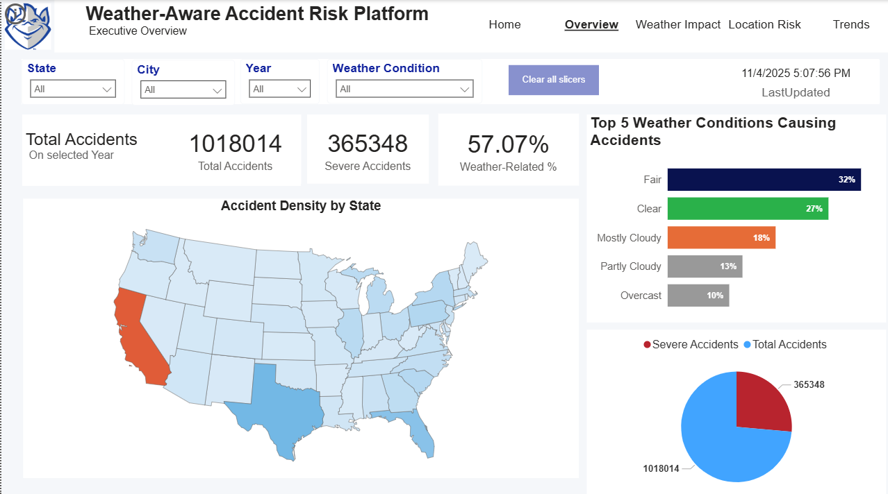

Power BI analytics integrating real-time weather and traffic data to identify, analyze, and mitigate accident risks across U.S. regions.
The Weather-Aware Accident Risk Platform is a comprehensive data-driven system built using Power BI, integrating accident data from Kaggle with live weather details hosted on SharePoint. The goal is to help transportation departments and the public understand how temperature, precipitation, visibility, and wind affect accident likelihood and severity.
Primary dataset: U.S. Accidents (Updated) from Kaggle, covering years 2016–2023.
Removed unnecessary fields like Amenity, Station, Bump, and Twilight data to focus on core weather–accident relationships.
The workflow includes data extraction, transformation, and visualization:
This solution contains six interactive Power BI pages. Use the button below to download the full report and open it in Power BI Desktop.
Download Power BI Report (.pbix)Entry page introducing the project, banner title, and a link back to this documentation website for context.

Shows KPIs and nationwide accident distribution, highlighting total vs severe cases, weather-related percentage, and top weather categories.
Explores how precipitation, temperature, humidity, and visibility influence accident counts and severity levels with top weather-condition charts and state-wise weather-related metrics.

Highlights accident density by state and city through an interactive map, state-wise accident ranking, and a detailed city table showing severity and average temperature.

Displays seasonal and daily patterns, showing accidents by month, by weekday, and year-over-year comparison of total vs severe accidents.

Guides end users on how to interact with slicers, interpret KPIs, and read each visual, making the dashboard accessible for both technical and non-technical stakeholders.

| Weather Condition | Observed Impact |
|---|---|
| Fog / Mist | High risk due to reduced visibility, severe accident share > 35% |
| Rain / Drizzle | Increases likelihood of minor collisions by up to 25% |
| Snow / Ice Pellets | Associated with slower response times and road skidding |
| Thunderstorms | Low frequency but very high severity; electrical outages add complexity |
The total estimated project investment is $40,000 USD, distributed across software, data sources, team, and infrastructure.
| Resource | Description | Budget (USD) |
|---|---|---|
| Software / Tools | Power BI Desktop, Power BI Service Enterprise licenses | $6,000 |
| Data Sources | Live weather & traffic datasets from public APIs | $8,000 |
| Team Scale | 5-member team: Data Analyst, BI Developer, Project Lead | $16,000 |
| Infrastructure | High-performance PCs, cloud storage, SharePoint hosting | $5,000 |
| Management & Reporting | Weekly reports, presentation material, stakeholder review | $5,000 |
| Total | $40,000 | |
This project demonstrates a realistic BI workflow suitable for both academic and enterprise deployment. From data extraction to automated refreshes, it highlights how weather analytics can be integrated into accident management systems for decision-making and public safety improvement.
Future Scope: integrate live APIs (OpenWeatherMap, DOT feed), enable predictive modeling using Azure ML, and deploy the dashboard in Power BI Service for real-time alerts.